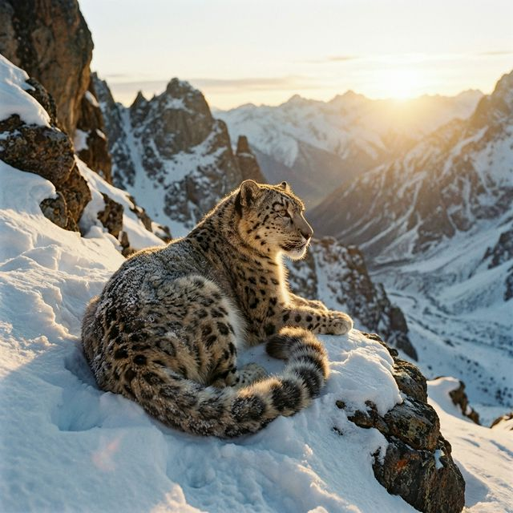
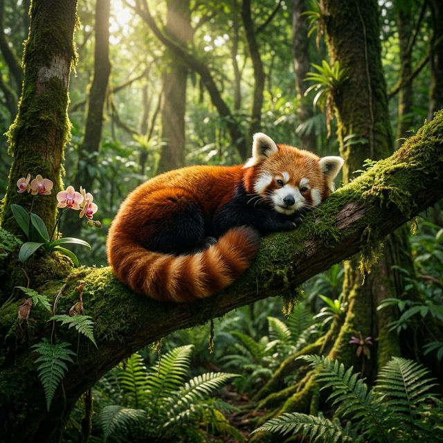
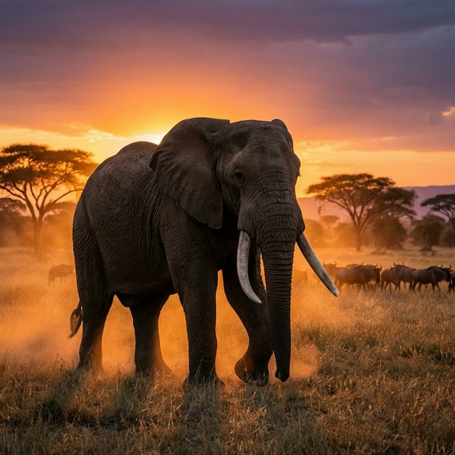

La biodiversité mondiale s'effondre à un rythme sans précédent. Des forêts
tropicales aux abysses océaniques, des espèces millénaires disparaissent en silence. Pourtant,
l'espoir subsiste. Rejoignez le mouvement global pour protéger l'équilibre fragile de notre planète
et laissez un héritage vivant aux générations futures.
Face à la déforestation, au braconnage et aux changements climatiques, ces espèces
luttent chaque jour pour leur survie.

En Danger Critique
Panthère des Neiges
Le "fantôme des montagnes". Avec moins de 4,000 individus restants dans la nature en Asie
centrale, ce noble félin subit la perte de ses proies et l'exploitation de son habitat
montagneux.

En Danger
Panda Roux
Résident nocturne de l'Himalaya oriental, sa population mondiale a reculé de plus de 50% au
cours de la dernière décennie. La déforestation pour les terres agricoles reste son plus
grand défi.

Vulnérable
Éléphant de Savane
Malgré leur carrure majestueuse, les éléphants ne font pas le poids face aux braconniers
d'ivoire et à l'expansion agricole qui fragmente inévitablement leurs immenses routes de
migration.
Actualités de la Conservation
19 Février 2026 • Dossier Spécial
Le retour miraculeux des loups dans les Rocheuses : Un triomphe écologique
Après presque un siècle de disparition, la réintroduction minutieuse de
plusieurs meutes dans le parc national de Yellowstone et les Rocheuses illustre la capacité
incroyable de la nature à se régénérer. Les scientifiques ont constaté une revitalisation
complète de l'écosystème local, de la repousse des forêts de saules jusqu'au retour de dizaines
d'espèces d'oiseaux et de castors.
Une nouvelle flotte de drones à vision thermique aide les gardes
forestiers sud-africains à repérer les braconniers de nuit avec un taux de réussite de 85%.
Ceux qui ont dédié, et parfois sacrifié, leur vie entière pour nous faire aimer et
comprendre le règne animal.
🦍
Dian Fossey
« L'homme qui tue les animaux aujourd'hui est l'homme qui tuera les hommes
demain. »
Pionnière américaine en primatologie, elle a consacré 18 ans de sa vie à étudier
quotidiennement les gorilles des montagnes du Rwanda au mépris de tous les dangers. Son combat
acharné contre le braconnage a littéralement sauvé l'espèce de l'extinction, payant cet exploit
de sa propre vie en 1985.
🐒
Jane Goodall
« Vous ne pouvez pas passer une seule journée sans avoir d'impact sur le monde
qui vous entoure. »
L'éthologue britannique qui a révolutionné notre compréhension des chimpanzés et
de ce qui définit fondamentalement la nature humaine. Ses observations extraordinaires dans le
parc national de Gombe Stream en Tanzanie (notamment l'utilisation d'outils par les singes) ont
marqué un tournant définitif en biologie.
🐊
Steve Irwin
« Si nous pouvons apprendre aux gens la faune sauvage, ils seront touchés...
car les humains veulent sauver ce qu'ils aiment. »
Directeur charismatique de l'Australia Zoo et phénomène télévisuel mondial, le
"Chasseur de Crocodiles" a infusé sa passion pure pour la faune australienne et l'herpétologie à
toute une génération. Son approche sans peur a sensibilisé des millions de personnes à la
conservation de la nature.
Modèles de Conservation : Sanctuaires & Zoos Recommandés
La conception moderne d'un zoo ne se résume plus à l'exhibition, mais à la
préservation active, la recherche et la reproduction d'espèces hors de leur milieu de plus en plus
menacé.
San Diego Zoo Wildlife Alliance 📍 Californie, USA
Considéré comme l'un des meilleurs instituts biologiques du monde. Ils gèrent "l'Arche
Congelée", une vaste banque d'ADN visant à prévenir définitivement la disparition génétique
de milliers d'espèces. Leurs efforts ont particulièrement sauvé le Condor de Californie.
40+Espèces Sauvées
Australia Zoo 📍 Queensland, Australie
Fondé par la famille Irwin, ce zoo consacre une écrasante majorité de ses fonds à ses
hôpitaux pour animaux sauvages et à la préservation de vastes tracts terrestres pour les
tigres en Asie du Sud-Est et les éléphants de Sumatra.
120KSoignés/An
Base de Recherche de Chengdu 📍 Sichuan, Chine
Leader mondial absolu de la préservation et la prolifération du grand panda. Si le Panda
Géant est passé de la catégorie "En Danger" à "Vulnérable" au cours des dernières décennies,
c'est en grande partie grâce aux succès reproductifs de cet institut de pointe.
200+Naissances Pandas
Sanctuaire de Sheldrick 📍 Nairobi, Kenya
Un orphelinat iconique mondialement connu pour la réhabilitation d'éléphanteaux et de
rhinocéros noirs dont les parents ont été victimes du braconnage. Les animaux sont élevés
avec une immense affection et lentement réintroduits dans le géant parc national de Tsavo.
300+Éléphants Réintroduits
La Beauté à l'État Pur
Contemplez la magnificence de la faune sauvage à travers l'objectif de photographes.
Ces créatures uniques méritent notre protection absolue et notre respect infini.